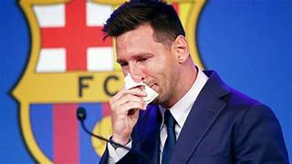
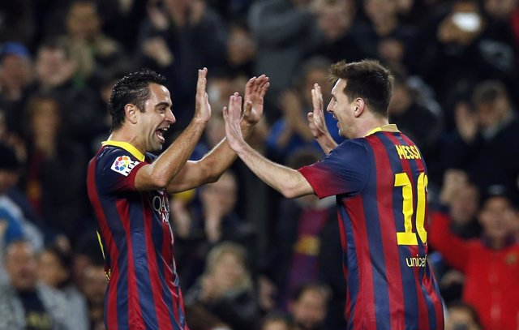
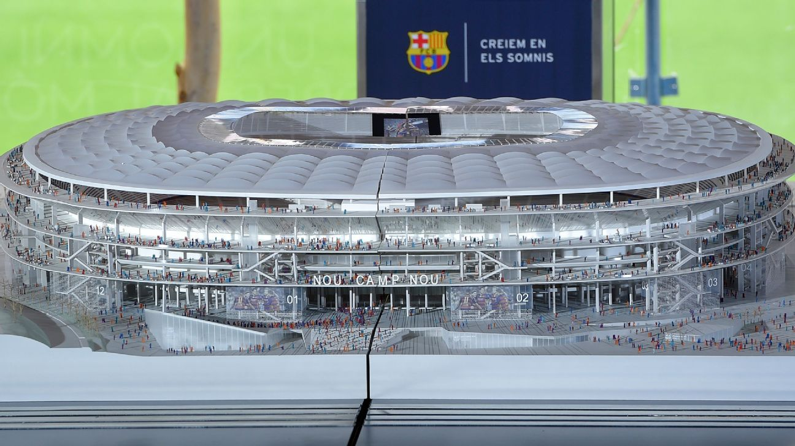

Messi a sido uno de los mejores jugadores de la historia que le a robado el corazón a muchas personas,tanto a niños,niñas,señores y muchos mas,lo cual el que no regrese a donde llego les arruina sus esperanzas que tenian y talvez sueños futuros sobre sus campeonatos, por eso les traigo 6 razones por las cual Messi debe regresar al Barcelona
Cerrar la herida
Mas de un año a pasado desde que el futbol se quedo frio al enterarse que Leo Messi se iba del Barca algo que hace algun tiempo hera imposible siquiera de pensar lagrimas y dolor fue lo que dejo esta noticia en los seguidores catalanes y muchos siguen sin superar que el astor argentino ya no juega para ellos para Messi tampoco fue facil arruinar lo que tuvo en el primer año en el Paris Saint Germain por pesimos numeros y prese que ahora esta mejor en Paris estamos seguros que el tambien extraña vivir y jugar en Barcelona por lo que el regreso de la Pulga seria cerrar la herida para ambas partes y comenzar un nuevo ciclo recuperando por completo las sonrisas.

Rencontrarse con Xavi
Tanto el Español como el Argentino fueron piesas fundamentales del exito del Barcelona durante bastante tiempo y es por eso que ahora seria bonito como final de Tele novela su reencuentro en el Barca solo que ahora con Xavi como tectico y Messi tambien mucho mas experimentado Xavi y Messi siguen en constante contacto por lo que el entendimiento esta intacto y sin duda alguna ambos tendrian ambas posibilidades de llevar al club nuevamente a lo mas alto.

Inagurar el nuevo Cap Nou
Muchos quizás no lo sepan pero a partir de la próxima temporada el Barca jugara sus partidos como local en el Estadio de Monyjuic ya que el Cap Nou entrara en un ajuste inecesaria remodelación una vez que el inmueble quede listo que mejor atracció que tener a Messi la maxima estrella de toda la historia para ese momento tan especial.

Ganar la ultima Champios
Messi ni Barcelona han ganado la Champios desde aquel lejano 2015 y por el contrario solo han visto como el Real Madrid acresenta su dominio en ese torneo independientemente de lo que pueda pasar en la edicion que se huega en ese momento tanto Barca como Messi firmarian volver a ganar juntos el maximo trofeo de clubes tener imagenes que conmueven a todos que despues de algun tiempo nuevamente Messi por el escudo de los Catalanes en el pecho levanto la orejona.
Retirarse del club de sus amores
si muy bonito que Messi ande por el glamur de Paris con el famoso trientre de Mbappe pero estamos seguros que hasta los que no le van al Barca quieren que Messi se retire con el equipo de su vida cosa que es casi imposible de ver.